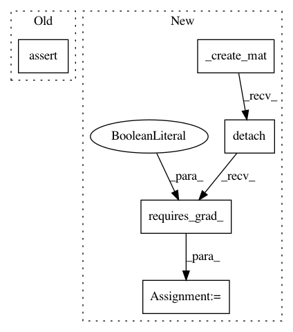

f7b10102a3a0b08272634347ff3a65efd3df18ce,test/functions/test_inv_matmul.py,TestInvMatmulNonBatch,test_inv_matmul_multiple_vecs,#TestInvMatmulNonBatch#,49
Before Change
res.backward(gradient=grad_output)
actual.backward(gradient=grad_output)
self.assertLess(torch.max((self.mat_copy.grad - self.mat.grad).abs()).item(), 1e-3)
self.assertLess(torch.max((self.vecs_copy.grad - self.vecs.grad).abs()).item(), 1e-3)
class TestInvMatmulBatch(unittest.TestCase):
def tearDown(self):
After Change
self.assertAllClose(vec.grad, vec_copy.grad)
def test_inv_matmul_multiple_vecs(self):
mat = self._create_mat().detach().requires_grad_(True)
mat_copy = mat.detach().clone().requires_grad_(True)
mat_copy.register_hook(_ensure_symmetric_grad)
vecs = torch.randn(*mat.shape[:-2], mat.size(-1), 4).detach().requires_grad_(True)
vecs_copy = vecs.detach().clone().requires_grad_(True)
// Forward
with settings.terminate_cg_by_size(False):
res = NonLazyTensor(mat).inv_matmul(vecs)
In pattern: SUPERPATTERN
Frequency: 3
Non-data size: 5
Instances
Project Name: cornellius-gp/gpytorch
Commit Name: f7b10102a3a0b08272634347ff3a65efd3df18ce
Time: 2019-04-04
Author: gpleiss@gmail.com
File Name: test/functions/test_inv_matmul.py
Class Name: TestInvMatmulNonBatch
Method Name: test_inv_matmul_multiple_vecs
Project Name: cornellius-gp/gpytorch
Commit Name: f7b10102a3a0b08272634347ff3a65efd3df18ce
Time: 2019-04-04
Author: gpleiss@gmail.com
File Name: test/functions/test_inv_matmul.py
Class Name: TestInvMatmulNonBatch
Method Name: test_inv_matmul_vec
Project Name: cornellius-gp/gpytorch
Commit Name: f7b10102a3a0b08272634347ff3a65efd3df18ce
Time: 2019-04-04
Author: gpleiss@gmail.com
File Name: test/functions/test_root_decomposition.py
Class Name: TestRootDecomposition
Method Name: test_root_decomposition